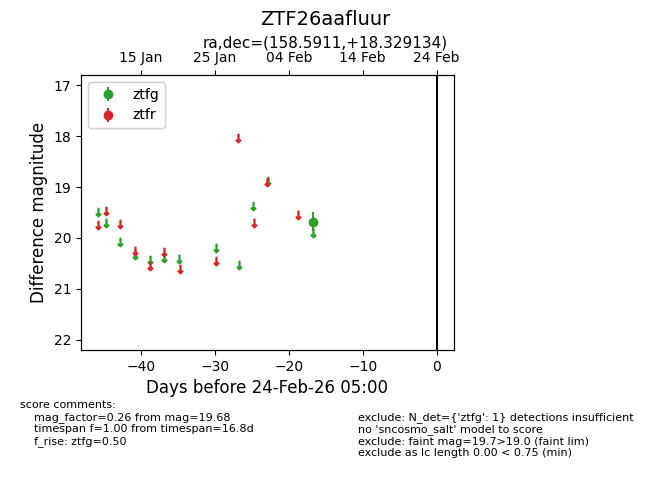
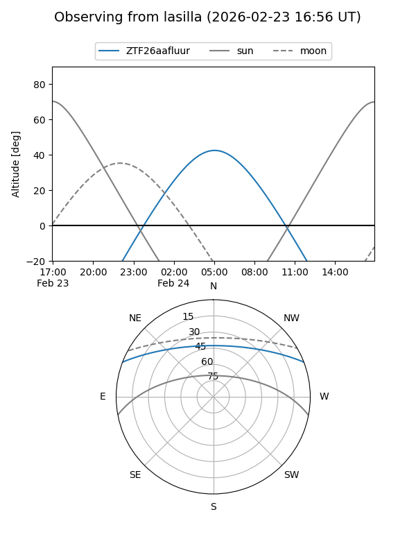
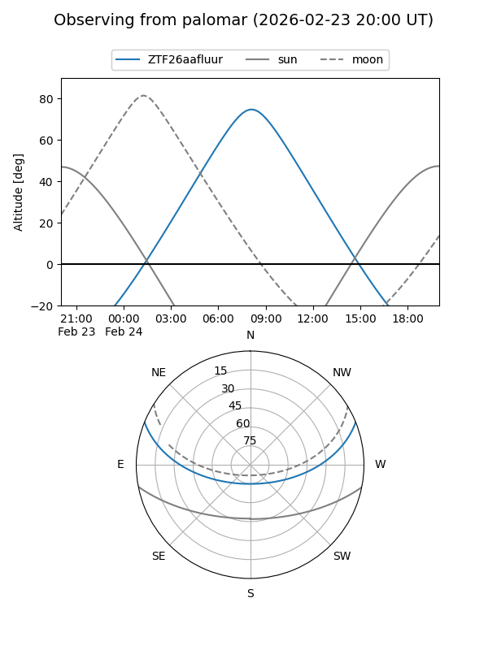

ZTF26aafluur
Target ZTF26aafluur at 2026-02-24 09:08
Aliases and brokers:
FINK: link
Lasair: link
ALeRCE: link
alt names
ZTF26aafluur (ztf,fink_ztf)
Coordinates:
equatorial (ra, dec) = 158.5911,+18.32913
equatorial (HMS+DMS) = 10:34:21.86,+18:19:44.88
galactic (l, b) = (221.2168,+57.30679)
Flags:
Photometry:
last ztfg=19.68
1 ztfg detections
Lightcurve

Visibility


Additional plots